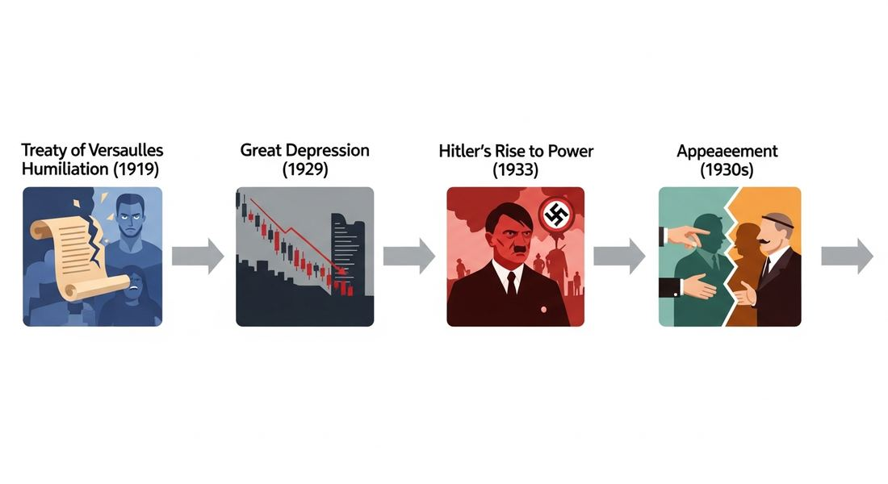

7.6 Causes of World War II
- LO-A: Four causes of WWII (required by the AP CED): (1) Unsustainable Versailles settlement, created German resentment and destabilized European security; (2) Global economic crisis (Great Depression), mass unemployment made populations receptive to extremist promises; (3) Continued imperialist aspirations. Germany demanded lebensraum ("living space"), Japan expanded in Asia; (4) Rise of fascist and totalitarian regimes, especially Nazi Germany under Hitler, whose aggressive militarism was the immediate cause of war. Hitler's rise: Depression + Versailles resentment = political opportunity: The Nazi Party (NSDAP) won 2.6% of the vote in 1928 when Germany was relatively stable. After the Depression hit (1929), it won 37% in July 1932. Hitler promised to tear up the "humiliation" of Versailles, restore German greatness, and provide economic recovery. He became chancellor in January 1933, then consolidated dictatorial power by year's end. Appeasement: the policy that failed: Britain and France responded to Hitler's escalating demands with appeasement, making concessions to avoid war. The Munich Agreement (September 1938) gave Hitler the Sudetenland (Czechoslovakia's German-speaking border region) in exchange for a promise of no further territorial demands. Hitler broke the promise within six months. Appeasement failed because it was predicated on Hitler being a normal nationalist seeking limited territorial adjustments. He wasn't. War begins: Poland, September 1939: After annexing Austria (March 1938) and Czechoslovakia (March 1939), Hitler demanded the Polish Corridor. On September 1, 1939, Germany invaded Poland. Britain and France, having finally abandoned appeasement, declared war on Germany two days later. WWII had begun.
Try each question before revealing the answer.
1. The AP CED identifies the Great Depression as a cause of WWII. How does an economic crisis lead to a world war?
2. Britain and France chose appeasement over confrontation when Hitler first violated the Versailles settlement (rearmament, Rhineland, Austria). Were they being cowardly, or was appeasement a reasonable policy given what they knew at the time?
3. Fascism emerged in Italy before Germany. Mussolini took power in 1922, eleven years before Hitler. What conditions produced fascism's appeal in the interwar period?
4. Hitler wrote in Mein Kampf (1924) about his plans for German expansion into Eastern Europe and the elimination of Jews. Why did European leaders not take these stated goals seriously?
5. The AP CED specifically identifies "aggressive militarism of Nazi Germany under Adolf Hitler" as a cause of WWII. Why is Hitler specifically identified rather than just "fascism" or "totalitarianism"?
- Explain the causes and consequences of World War II, including the unsustainable Versailles settlement, the Great Depression, continued imperialist aspirations, and the rise of fascist/totalitarian regimes especially Nazi Germany under Hitler
Tap a term for its definition.
-
Definition: Ultra-nationalist authoritarian ideology emphasizing national rebirth, state power, anti-communism, racial hierarchy, and the glorification of violence and war. Significance: Emerged in Italy (Mussolini, 1922) and Germany (Hitler, 1933); provided the ideological foundation for WWII's most destructive regime.
-
Definition: Hitler's specific form of fascism combining extreme German nationalism, antisemitism (hatred of Jews as a supposed racial enemy), and belief in German racial superiority and need for "living space" in Eastern Europe. Significance: The ideology behind Nazi Germany, the Holocaust, and WWII in Europe.
-
Definition: Germany's democratic government established after WWI (1919–1933), burdened from birth by Versailles obligations and undermined by economic crises. Significance: Hitler's rise to power occurred within and destroyed the Weimar Republic; its failure demonstrates how economic crisis and political dysfunction can destroy democratic institutions.
-
Definition: "Living space", Hitler's term for German racial need to conquer Eastern Europe for agricultural land and resources, displacing or exterminating Slavic populations. Significance: Core of Nazi ideological expansionism; explains Hitler's strategic priorities: conquest of Poland, Ukraine, and Russia specifically.
-
Definition: British and French policy of making territorial concessions to Hitler to avoid war; most associated with the Munich Agreement (1938). Significance: Failed because it was based on miscalculating Hitler's goals as limited; emboldened further aggression; became a historical byword for the failure of diplomacy with totalitarian aggressors.
-
Definition: Agreement in which Britain and France allowed Germany to annex the Sudetenland (Czechoslovakia's German-speaking region) in exchange for Hitler's promise of no further territorial demands. Significance: Hitler violated the agreement within six months; Chamberlain's "peace for our time" claim is now one of history's most famous diplomatic failures.
-
Definition: The annexation of Austria by Nazi Germany in March 1938, uniting the two German-speaking states despite being explicitly prohibited by the Versailles Treaty. Significance: First of Hitler's major territorial expansions; met with no military resistance from Britain and France; demonstrated that appeasement would not stop Hitler.
-
Definition: A form of government that seeks to control all aspects of public and private life, using a single-party state, ideology, propaganda, and terror to eliminate opposition. Significance: Both Nazi Germany and the Soviet Union were totalitarian states; the AP exam asks you to compare their methods of conducting WWII (Topic 7.7).
🌍 The Road to World War II: Four Causes
The AP CED identifies four specific causes of World War II: the unsustainable Versailles peace settlement, the global economic crisis of the Great Depression, continued imperialist aspirations, and the rise of fascist and totalitarian regimes, "especially the aggressive militarism of Nazi Germany under Adolf Hitler." Unlike WWI, where causation is somewhat diffuse, WWII in Europe has a more direct causal chain: all four factors fed into Hitler's rise to power and his willingness to risk a world war to achieve his ideological goals.
These causes are interconnected: Versailles created German resentment that fascist nationalism exploited; the Depression created economic desperation that gave fascist parties mass electoral support; imperialist competition created a strategic environment in which expansion seemed both necessary and achievable. Understanding WWII requires understanding all four causes as a system, not a list.
📜 Cause 1: The Unsustainable Versailles Settlement
As discussed in Topic 7.5, the Treaty of Versailles (1919) imposed war guilt, massive reparations, and territorial losses on Germany that most Germans regarded as unjust. The crucial phrase in the CED is "unsustainable", the settlement was not just harsh but structurally unstable. It created grievances without breaking Germany's capacity to seek revenge.
German political culture in the 1920s was saturated with resentment of Versailles. The "stab-in-the-back" myth, the false claim that Germany hadn't really lost WWI militarily but had been "stabbed in the back" by socialists and Jews on the home front, provided a politically potent narrative of victimhood. The Weimar Republic, which had signed Versailles, was permanently associated with national humiliation. Hitler's central political promise was to tear up the treaty and restore German greatness, a promise with mass appeal precisely because of Versailles.
📉 Cause 2: The Great Depression
The Great Depression was the Great Depression's political consequences are as important as its economic ones. When unemployment hit 30% in Germany by 1932, on top of the humiliation of Versailles, the trauma of WWI, and previous economic instability (hyperinflation had wiped out middle-class savings in 1923), the Weimar Republic's fragile democratic institutions could not survive.
The numbers tell the story. In 1928, the Nazi Party (NSDAP) won 2.6% of the vote in Germany. In 1930, after the Depression struck, they won 18.3%. In July 1932, at the Depression's depth, they won 37.4%, the largest share of any party. Hitler was appointed Chancellor in January 1933. Within a year, through the Enabling Act and suppression of opposition, he had established a dictatorship. The Depression didn't make Nazism inevitable, but it provided the mass desperation that made Hitler's promises of national restoration, economic recovery, and restored greatness compelling to enough Germans to bring him to power.
🌐 Cause 3: Continued Imperialist Aspirations
The CED explicitly identifies "continued imperialist aspirations" as a cause of WWII, in both European and Asian theaters. Nazi ideology centered on the concept of Lebensraum ("living space"): the belief that the German people needed to conquer agricultural land in Eastern Europe (primarily Ukraine and Poland) to secure German racial survival. This was imperialism with an explicitly racial and exterminating dimension: Slavic peoples in conquered territories were to be enslaved, deported, or killed, and the land resettled with German farmers.
In Asia, Japan's continued imperialist expansion, begun in Manchuria (1931) and expanded into China (1937), was driven by the same logic of resource acquisition and racial hierarchy that characterized German imperialism. Japan believed it needed raw materials (oil, rubber, iron ore) that it lacked domestically; Southeast Asia, under Western colonial control, had them. Japan's "Co-Prosperity Sphere" ideology justified conquest as liberation from Western imperialism while pursuing Japanese imperial control.
⚡ Cause 4: Rise of Fascist and Totalitarian Regimes
The CED identifies this as the most direct cause: fascist and totalitarian regimes' aggressive militarism, "especially the aggressive militarism of Nazi Germany under Adolf Hitler", was the immediate cause of WWII. Understanding Hitler's rise requires understanding both the structural conditions (Versailles, Depression) and the specific character of Nazi ideology.
Hitler rose to power through democratic means, the Nazi Party won elections, but immediately dismantled democracy. The Reichstag Fire (February 1933, probably set by a lone communist, but used by the Nazis as a pretext for emergency powers) and the Enabling Act (March 1933, passed by a Reichstag intimidated by Nazi stormtroopers) gave Hitler dictatorial authority. Within months, all other political parties were banned, trade unions dissolved, the press controlled, and political opponents imprisoned in concentration camps.
Hitler then systematically dismantled the Versailles restrictions. He reintroduced conscription (1935), remilitarized the Rhineland (1936), and, to French and British inaction, learned that appeasement would allow him to proceed. The pattern of escalating demands and Western concession reached its climax at Munich (1938).

The road to WWII: Versailles humiliation + Depression desperation + fascist ideology + Western appeasement = Hitler's unchecked expansion until September 1939. AI-generated illustration (Google Gemini, 2025), commercially licensed.
☂️ Appeasement: The Policy That Failed
Britain and France's response to Hitler's escalating violations of Versailles was appeasement, making concessions to avoid war. The policy's most controversial moment was the Munich Agreement (September 1938). Hitler demanded the Sudetenland. Czechoslovakia's German-speaking border region. Britain and France pressured Czechoslovakia to surrender it, without Czech participation in the negotiations. British Prime Minister Neville Chamberlain returned from Munich waving the agreement and declaring it represented "peace for our time."
Six months later, in March 1939, Hitler seized the rest of Czechoslovakia, in direct violation of the Munich agreement's explicit terms. Britain and France finally abandoned appeasement. When Hitler invaded Poland on September 1, 1939, they declared war. WWII had begun.
These videos will help you review Causes of World War II and solidify key concepts before your exam.
- Nazi military takeover of German electoral institutions beginning in 1930
- the Great Depression creating mass unemployment and economic desperation that made Hitler's promises of national restoration and economic recovery appealing
- Germany's defeat in the Russo-German border conflicts of 1929–1930
- the death of Hindenburg in 1930, which removed the main barrier to Nazi electoral success
- Germany invaded the Sudetenland before the agreement could be signed
- Britain and France did not consult their military advisors before agreeing to German demands
- it was based on a fundamental misreading of Hitler's goals as limited territorial adjustments rather than unlimited expansionism
- the Soviet Union refused to accept the settlement, beginning a separate war with Germany
- Nazi Germany's Lebensraum ideology requiring conquest of Eastern European agricultural land and Japan's expansion in Asia for resources
- Britain and France's decision to impose the mandate system on former German colonies
- Germany's demand that Austria hold a plebiscite on reunification
- the Soviet Union's territorial demands from Finland and the Baltic states in 1939–1940
- a military coup that replaced the Reichstag with Nazi stormtroopers
- a popular referendum in which 90% of Germans voted to abolish the Weimar Republic
- the assassination of Hindenburg, which removed the last constitutional check on Hitler's power
- the Enabling Act, which gave Hitler emergency powers, combined with suppression of all opposition parties
- Each cause operated independently; the war would have occurred even if any one cause had been absent
- The Great Depression was the single root cause; all other factors were secondary effects of economic crisis
- The causes reinforced each other: Versailles created resentment that fascism exploited; the Depression provided the mass support; imperialist ideology drove expansion
- The Versailles settlement was the primary cause; without it, fascism could not have emerged in Europe